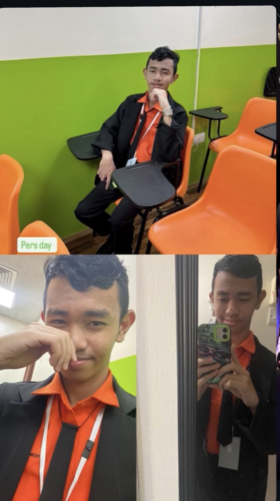

In, the beginning, I woke up, took a breakfast, and then I go to school. I picked up my little sister to Al Qiyadah and then I go to school but the train is too crowded and I was struggling to get out of the train. It was first time actually, and then going to school, the room was 604b I think, and then the teacher is Ms. Karen I think because our true adviser Ms. Esther was absent. I was so nervous and I don't know what to do, but then I met someone my first classmate, who later months disappeared and I don't know where he is now. As it flows, there was called so far a PASCERVEL report, and I worked with my classmate who is PRO, along with class president and her boyfriend. My thought was "Why would I report in the first place?" And then I just do it, and it was a success. And after class, I always picked up my little sister and then I go home. There was no assignment in this school which is a good news.